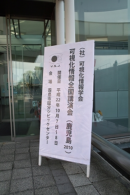
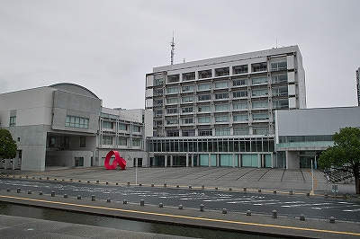
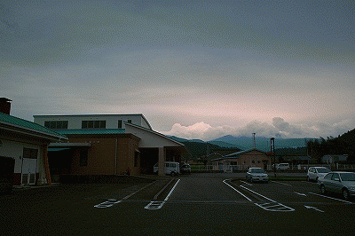
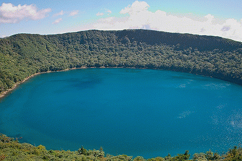
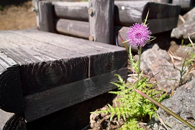
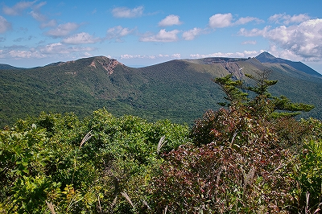

| ・ 可視化情報学会全国講演会（鹿児島2010)＠霧島市国分シビックセンター(H22.10.07-08) | |||
去年は2人発表でしたが、今年は田中助教が，可視化情報学会全国講演会（鹿児島2010)で“デジタルホログラフィによる充填層内部の3次元速度場計測”を発表しました． |
|||
|

看板ですねぇ |

会場のある市役所 | ||
|

韓国岳（からくにだけ）まではころころ天候が変わる. |

大浪池をぐるっと1周すると1時間くらい． | ||
|

ツクシアザミは雄々しくて良い. |

遠くの高千穂岳.登りたい. | ||